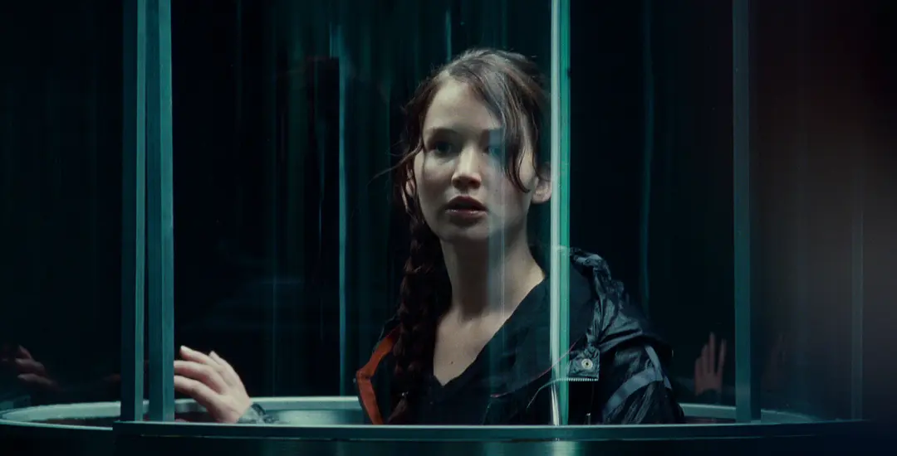
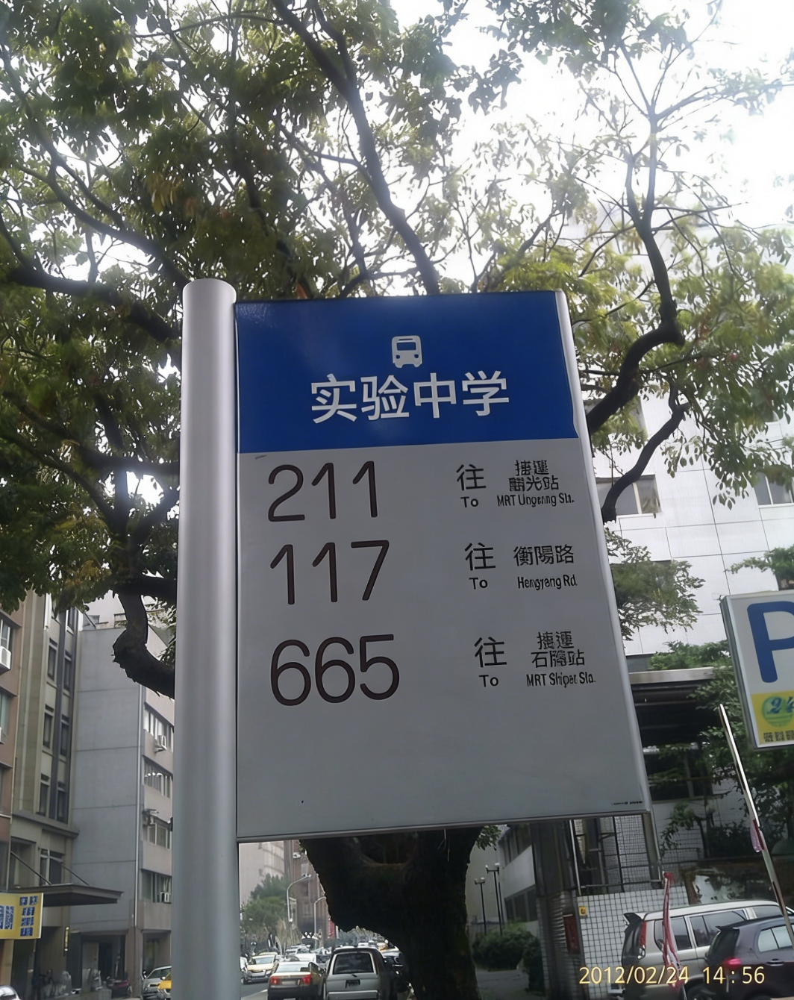

不知所以然
对此一点也不相信来着。
2012年8月19日 - 浏览 156 次
孤独患者
都是假的233，骗小学生
不知所以然
回复 孤独患者：我妹妹就很当真= =
不知所以然
晚上躲在被子里看完了《饥饿游戏》，凯特尼斯太勇敢了。我反问自己，能像她那样豁出一切去守护想要守护的人吗？
最近一直在循环《Safe and Sound》，我想Taylor Swift以后一定会大火的吧。
最近一直在循环《Safe and Sound》，我想Taylor Swift以后一定会大火的吧。

2012年5月2日 - 浏览 109 次
被学姐安利到了(*^▽^*)
回复 🌻白日梦想家：快去看!
我还是比较喜欢艾薇儿诶。。
不知所以然
好像察觉到了一点什么，朋友也许正准备和一个并不那么合适的人走得很近。心里闷闷的，说不出来是什么感觉，更不知道该不该开口。希望只是我多想了。
2011年9月26日 - 仅自己可见
不知所以然
家门口终于开始修地铁了，好像可以直通学校。可是等建好，我估计已经毕业了吧。终究还是赶不上啊，明天还是得早起去挤我的117路。

2011年6月21日 - 浏览 128 次
帮你问了我爸，确实在建啦，不过按进度来看，我应该也赶不上了(╯3╰)
不知所以然
喧嚣了一整天，只有在读几米的时候，内心才会真的平静下来。

2011年4月26日 - 浏览 96 次
饶雪漫呢，你看不看，我有她的签名书！
顺便表白《龙族》，啥时候和我一起看哇 ( • ̀ω•́ )✧
回复 盐酱Zoe：等暑假去你家玩~